Kế thừa kiến trúc DarkIR kết hợp cải tiến Max-RGB Prior và Gated Skip Connection
v4 − v3, Chi phí FLOPs vs. Latency.| Hạng mục công việc thực hiện | Kết quả đầu ra | Trạng thái |
|---|---|---|
| 1. Chuẩn bị dữ liệu đa miền (v3 → v4) | v3: 1,940 cặp (4 domains) → v4 mở rộng 7,117 cặp (5 domains, QuotaSampler 4,800/epoch) | Hoàn thành |
| 2. Cài đặt mô hình & Baselines | Standard U-Net, DarkIR-Edge, ablation no-FFT, DarkIR-m (ref) & baselines truyền thống | Hoàn thành |
| 3. Huấn luyện & Kiểm định thống kê | 12 lần huấn luyện (3 models × 2 seeds × 2 stages v3/v4) + Bootstrap 95% CI & paired tests | Hoàn thành |
| 4. Báo cáo khoa học & Slide | Báo cáo thực nghiệm v3/v4, slide thuyết trình, ứng dụng Demo & mã nguồn tái lập | Hoàn thành |
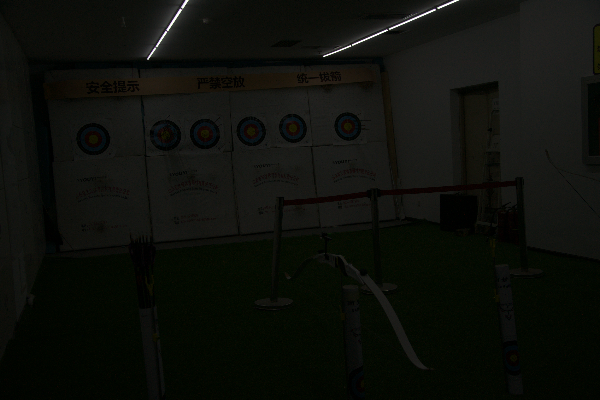
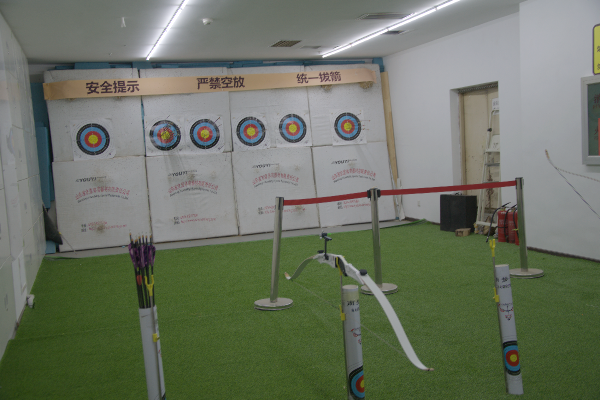
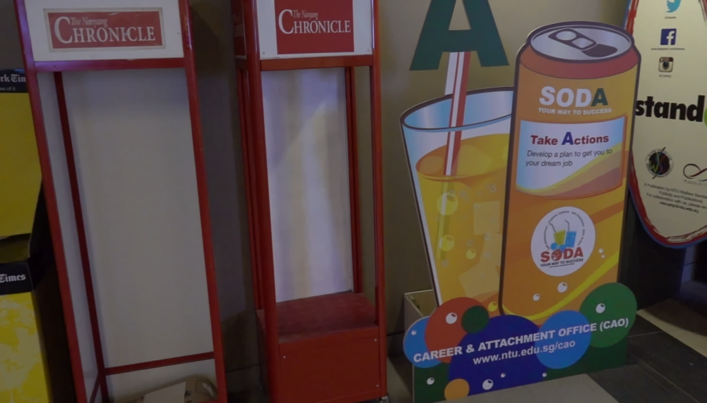
2 × (Conv 3×3 + GroupNorm(4) + ReLU).torch.cat chi tiết không gian và cộng thặng dư toàn cục + Input.I_max $\to$ Intro Conv nhận 4 kênh [R, G, B, I_max].FreMLP (2D-rFFT), DBlock đa tỉ lệ Di-SpAM [1,4,9] + PixelShuffle.Residual Gated Skip ở 3 tầng nối tắt và giám sát sâu tại Bottleneck 8C → 3.side_out.28k steps ở v3 → 42k steps ở v4), patch 256, batch 8, EMA 0.999.final.pt EMA (ep 70), đối chứng phụ bằng best.pt EMA.| Miền (Domain) | Train v3 | Train v4 (Quota/ep) | Val | Test | Nguồn dữ liệu & Thiết kế chống rò rỉ (Leakage-Free) |
|---|---|---|---|---|---|
| lolv2 | 639 | 639 (1,278) | 50 | 100 | LOLv2-Real: Thiếu sáng sâu & nhiễu hạt cảm biến trong nhà. |
| huawei | 561 | 2,380 (1,122) | 50 | 30 | LSRW-Huawei: Smartphone thực tế (loại vùng đệm gap = 10 quanh Val). |
| blur | 400 | 1,858 (1,600) | 50 | 40 | LOL-Blur: Tối + nhòe chuyển động (cách ly tuyệt đối 150/20/20 video). |
| nikon | 0 (Zero-shot) | 1,000 (400) | 0 | 20 | LSRW-Nikon DSLR: Zero-shot ở v3 → In-domain ở v4 (kiểm tra lệch miền). |
| lolv2syn | 0 | 900 (400) | 0 | 0 | LOLv2-Synthetic: Bổ sung ở v4 nhằm tăng đa dạng cấu trúc cảnh chụp. |
| Tổng cộng | 1,600 | 6,777 (4,800) | 150 | 190 | Cố định 100% Val (150) & Test (190) qua v3/v4 để đối chứng ghép cặp trực tiếp. |
lum_bias, sharp_ratio (Laplacian), $\Delta E_{00}$ & dark10_mae.42, 123), chấm điểm chính thức trên final.pt EMA (ep 70).| Phương pháp (Giai đoạn) | blur (40) | huawei (30) | lolv2 (100) | nikon (20) | Pooled (190) | Macro |
|---|---|---|---|---|---|---|
| Input / Gamma 2.2 | 10.55 / 18.09 | 9.06 / 15.08 | 9.72 / 17.27 | 9.30 / 15.42 | 9.75 / 16.90 | 9.66 / 16.46 |
| CLAHE / MSRCR | 12.90 / 12.20 | 10.39 / 11.44 | 11.54 / 12.03 | 11.04 / 13.45 | 11.59 / 12.12 | 11.47 / 12.28 |
| DarkIR-Edge (no FFT) — v3 | 23.47 ± 0.13 | 20.85 ± 0.23 | 20.84 ± 0.00 | 17.12 ± 0.29 | 21.00 ± 0.02 | 20.57 ± 0.05 |
| DarkIR-Edge (ours) — v3 | 23.57 ± 0.17 | 20.66 ± 0.05 | 21.07 ± 0.08 | 16.96 ± 0.04 | 21.10 ± 0.07 | 20.57 ± 0.04 |
| Standard U-Net — v3 | 23.80 ± 0.12 | 20.51 ± 0.18 | 21.39 ± 0.64 | 17.15 ± 0.02 | 21.31 ± 0.34 | 20.71 ± 0.17 |
| DarkIR-Edge (no FFT) — v4 | 23.72 ± 0.26 | 20.66 ± 0.03 | 20.98 ± 0.49 | 17.13 ± 0.01 | 21.10 ± 0.32 | 20.62 ± 0.20 |
| DarkIR-Edge (ours) — v4 | 23.54 ± 0.01 | 20.97 ± 0.20 | 20.74 ± 0.02 | 16.96 ± 0.17 | 20.97 ± 0.06 | 20.55 ± 0.10 |
| Standard U-Net — v4 | 24.01 ± 0.09 | 20.52 ± 0.28 | 20.86 ± 0.25 | 16.69 ± 0.02 | 21.03 ± 0.15 | 20.52 ± 0.10 |
| DarkIR-m (CVPR'25, ref v3 / v4) | 27.37 / 27.72 | 18.63 / 18.51 | 20.01 / 20.04 | 16.42 / 16.43 | 20.96 / 20.96 | 20.61 / 20.68 |
| Phương pháp (Giai đoạn) | SSIM Pooled (↑) | SSIM Macro (↑) | LPIPS Pooled (↓) | LPIPS Macro (↓) |
|---|---|---|---|---|
| Input / Gamma 2.2 | 0.217 / 0.595 | 0.225 / 0.555 | 0.554 / 0.356 | 0.557 / 0.363 |
| CLAHE / MSRCR | 0.405 / 0.410 | 0.384 / 0.401 | 0.466 / 0.471 | 0.472 / 0.450 |
| DarkIR-Edge (no FFT) — v3 | 0.732 ± 0.001 | 0.672 ± 0.001 | 0.350 ± 0.019 | 0.361 ± 0.016 |
| DarkIR-Edge (ours) — v3 | 0.733 ± 0.003 | 0.672 ± 0.002 | 0.341 ± 0.022 | 0.357 ± 0.015 |
| Standard U-Net — v3 | 0.747 ± 0.004 | 0.678 ± 0.002 | 0.279 ± 0.002 | 0.307 ± 0.003 |
| DarkIR-Edge (no FFT) — v4 | 0.743 ± 0.005 | 0.678 ± 0.002 | 0.303 ± 0.010 | 0.324 ± 0.007 |
| DarkIR-Edge (ours) — v4 | 0.743 ± 0.001 | 0.678 ± 0.000 | 0.307 ± 0.008 | 0.331 ± 0.005 |
| Standard U-Net — v4 | 0.745 ± 0.002 | 0.674 ± 0.004 | 0.277 ± 0.000 | 0.305 ± 0.004 |
| DarkIR-m (CVPR'25, ref v3 / v4) | 0.728 / 0.729 | 0.678 / 0.678 | 0.233 / 0.233 | 0.256 / 0.256 |
| Cặp so sánh (A − B) | Miền (n) | $\Delta\text{PSNR}$ (dB) | 95% Bootstrap CI | $p_t$ / $p_W$ | % A thắng | Kết luận đăng ký trước |
|---|---|---|---|---|---|---|
| [v3] Edge − U-Net | pooled (190) | −0.214 | [−0.530, +0.132] | 0.222 / 0.028* | 41.6% | Ngang nhau (CI chứa 0; $p_W=0.028$*) |
| [v3] Edge − no-FFT | pooled (190) | +0.096 | [−0.122, +0.310] | 0.386 / 0.613 | 51.1% | Không khác biệt (CI chứa 0) |
| [v4] Edge − U-Net | pooled (190) | −0.063 | [−0.360, +0.229] | 0.680 / 0.725 | 50.5% | Hòa thống kê (CI chứa 0) |
| [v4] Edge − no-FFT | pooled (190) | −0.131 | [−0.371, +0.105] | 0.290 / 0.340 | 47.4% | Không khác biệt (CI chứa 0) |
| [v4 − v3] Edge / U-Net (QT1) | lolv2+huawei (130) |
−0.185 / −0.407 |
[−0.519, +0.101] [−0.765, −0.067] |
0.236 / 0.023 |
53.1% / 44.6% |
Vi phạm QT1 (CI_lo < −0.3) |
| [v4 − v3] Edge (QT2 Nikon) | nikon (20) | +0.006 | [−0.625, +0.657] | 0.987 / 1.000 | 45.0% | Không đổi (Bất định phơi sáng) |
| [v4 − v3] Edge / U-Net (QT3 Blur) | blur (40) | −0.032 / +0.207 |
[−0.534, +0.433] [−0.237, +0.665] |
0.896 / 0.369 |
55.0% / 57.5% |
Bão hòa dung lượng (~1.9M params) |
| Mô hình | Params | GFLOPs @256² | Latency FP32 (v3 / v4) |
Latency FP16 (v3 / v4) |
Infer / Train VRAM |
|---|---|---|---|---|---|
| DarkIR-Edge (C=24) | 1.924 M | 8.75 G (−53%) |
31.71 / 32.29 ms (~31 FPS) |
26.23 / 26.63 ms (~38 FPS) |
236.7 MB / 4,816 MB |
| DarkIR-Edge (no-FFT) | 1.495 M (−22%) |
7.50 G | 27.31 / 27.79 ms (~36 FPS) |
21.57 / 21.98 ms (~46 FPS) |
220.6 MB / 3,264 MB |
| Standard U-Net (b=32) | 1.928 M | 18.45 G | 13.23 / 13.37 ms (~75 FPS) |
11.55 / 11.81 ms (~86 FPS) |
269.7 MB / 1,471 MB |
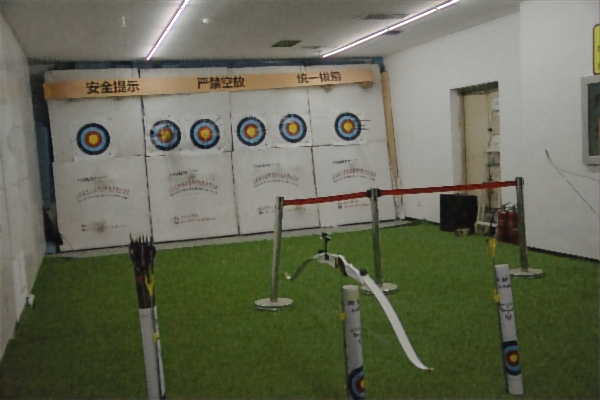
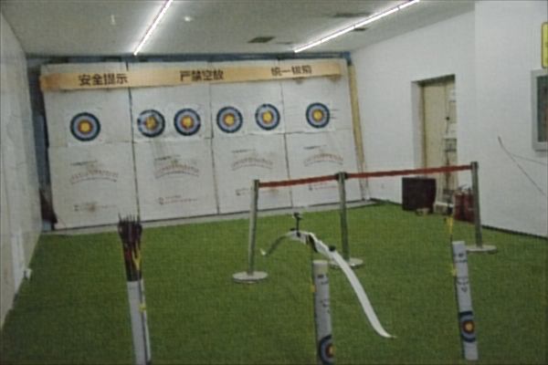
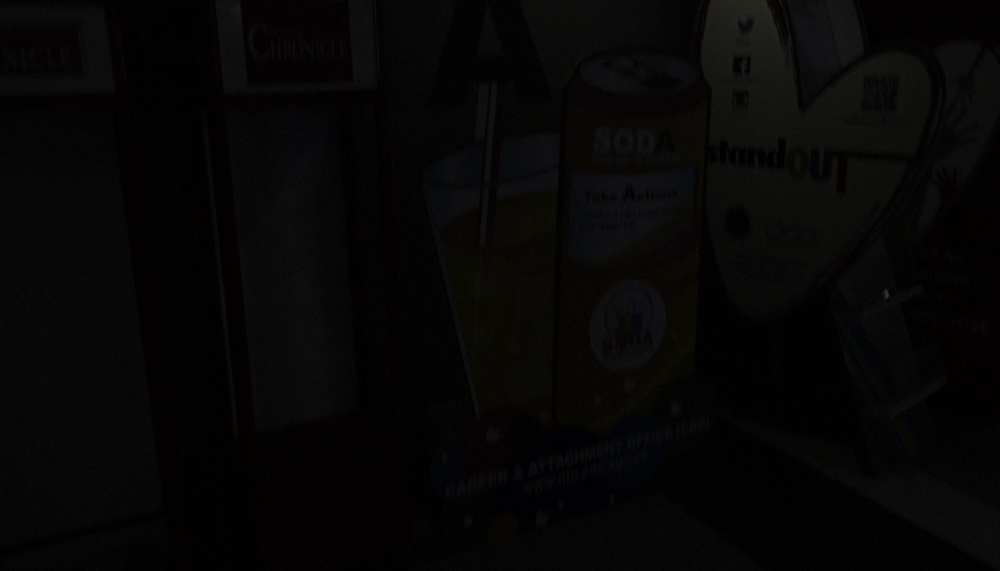
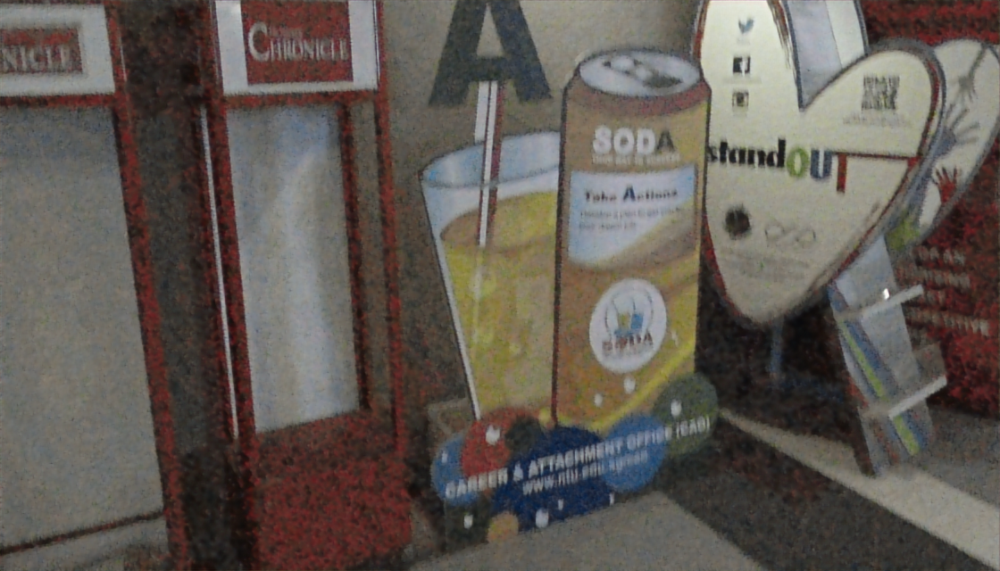
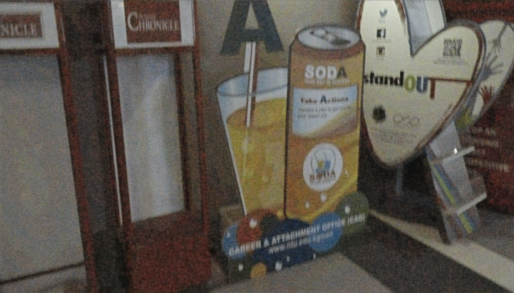
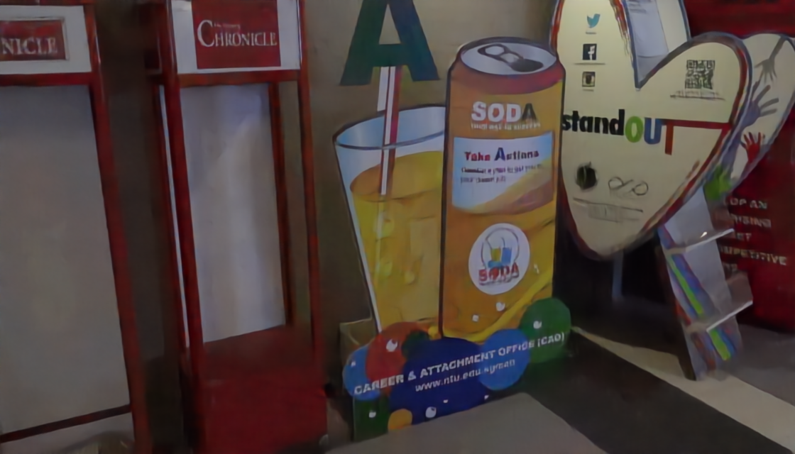
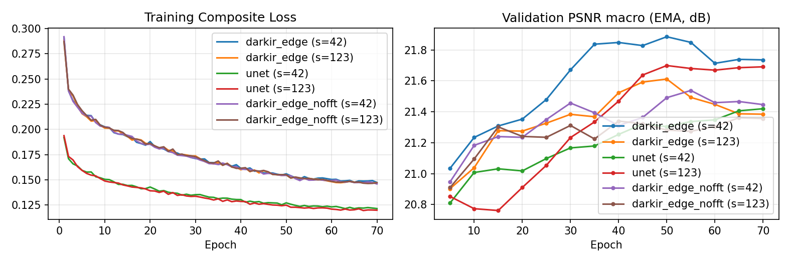
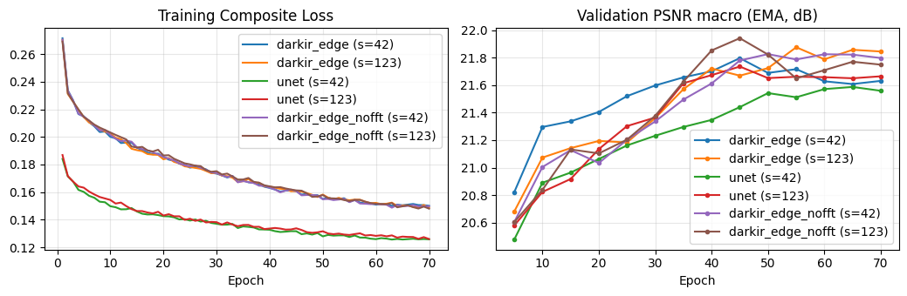
final.pt và best.pt chỉ $\le 0.07\text{ dB}$.sharp_ratio của U-Net (0.285–0.304) cao hơn Edge (0.170–0.221), khôi phục biên cạnh rõ nét hơn.Kính mời Quý Thầy Cô và các anh chị học viên đặt câu hỏi và góp ý cho đề tài.
Cảm ơn Quý Thầy Cô và các anh chị học viên đã chú ý lắng nghe